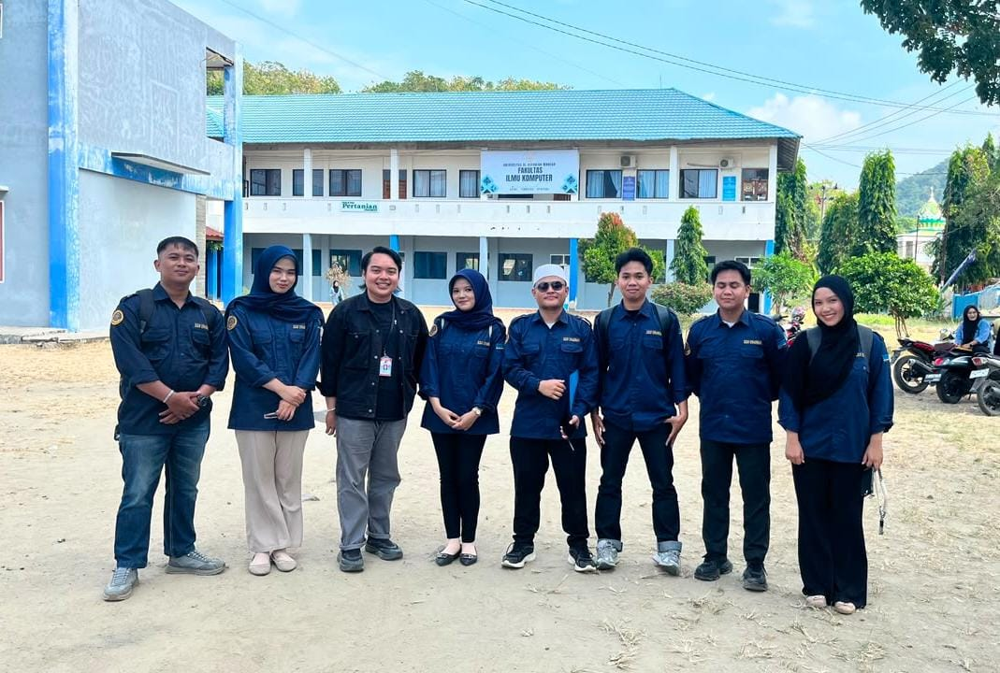
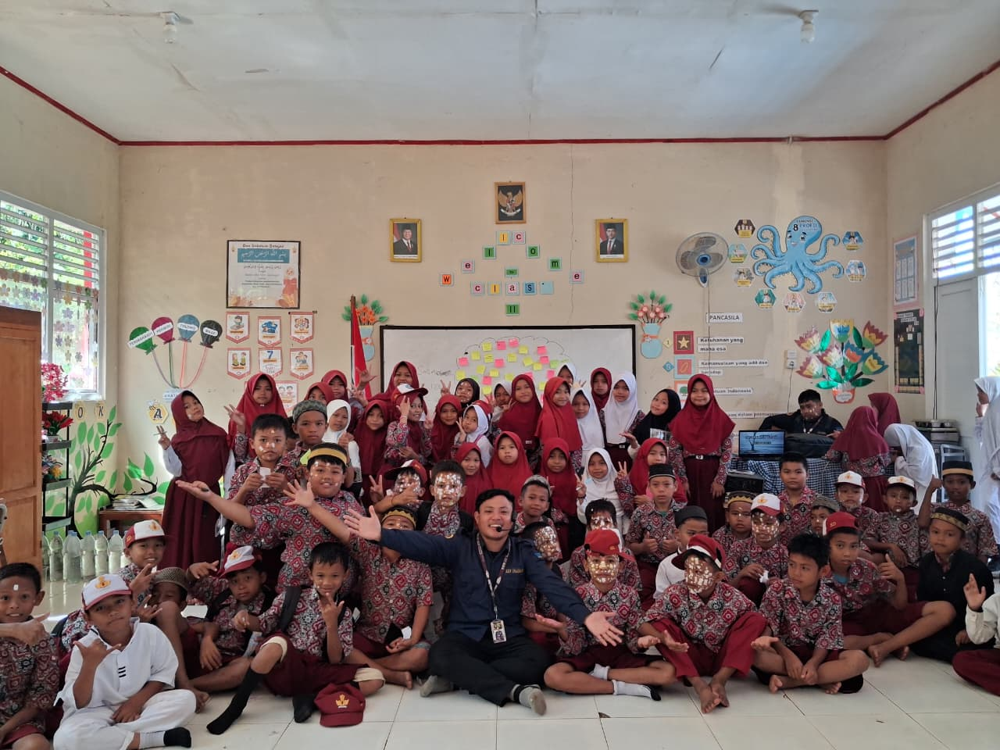
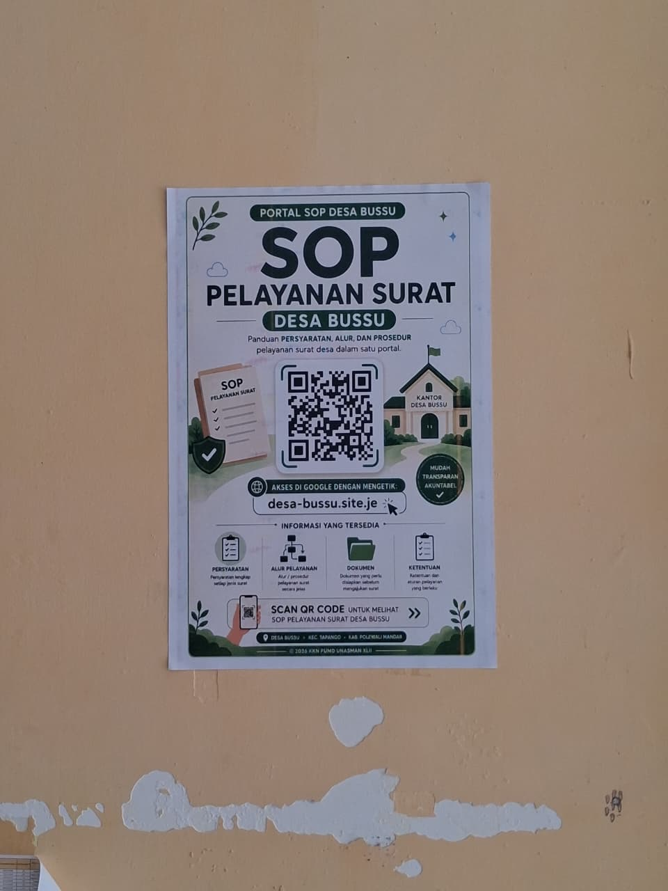
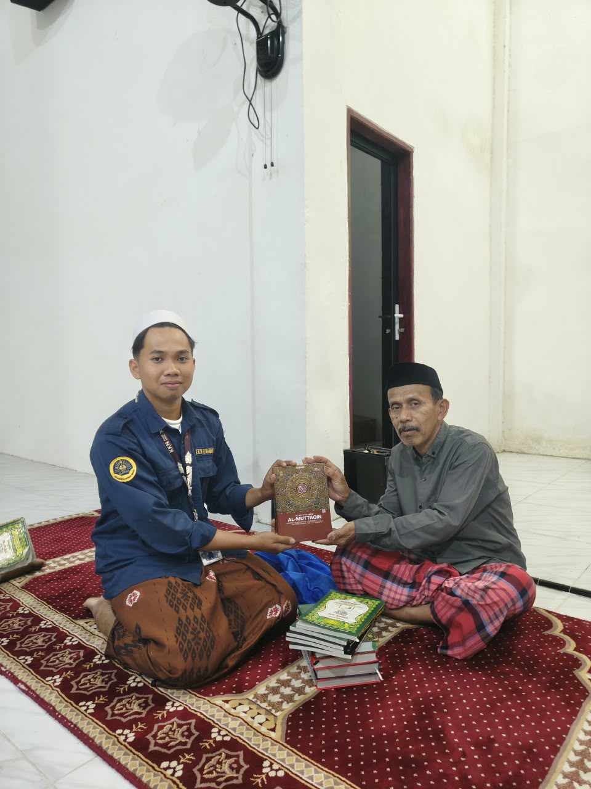
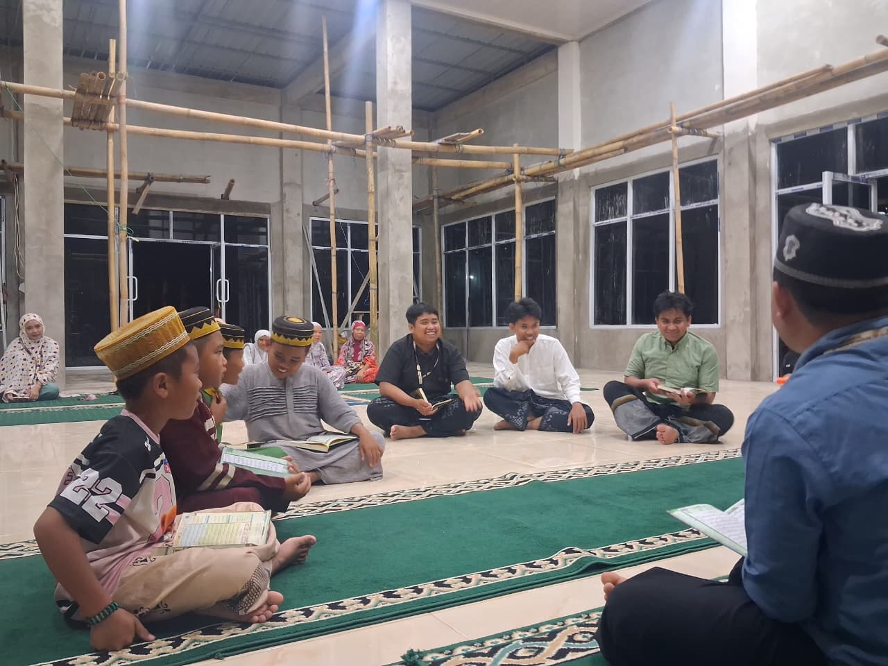
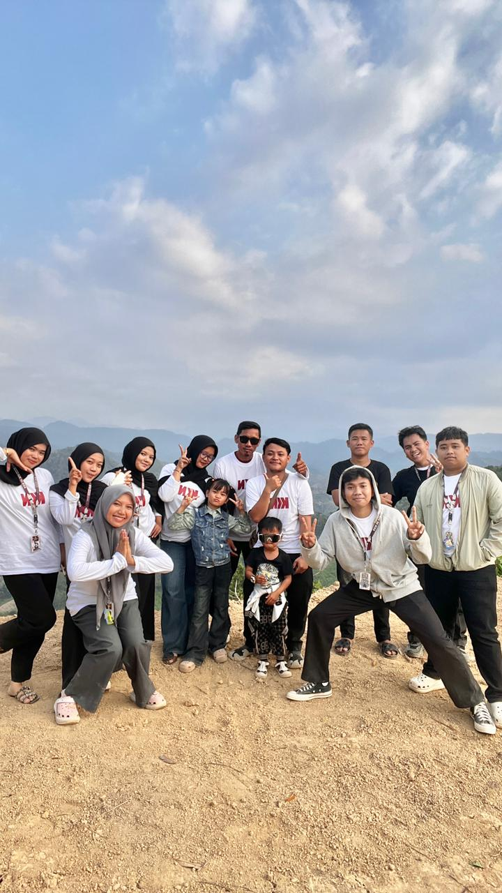

THE BEGINNING
PEMBERANGKATAN
Langkah pertama menuju Desa Bussu. Membawa barang, harapan, dan rasa penasaran tentang cerita yang akan kami jalani bersama.

FIRST LOOK
OBSERVASI DESA
Mulai mengenal lingkungan, masyarakat, serta melihat lebih dekat kondisi dan kehidupan Desa Bussu.

WITH THE COMMUNITY
KE POSYANDU
Berbaur bersama masyarakat dan ikut mengambil bagian dalam kegiatan Posyandu desa.

THE PLAN
SEMINAR PROKER
Menyampaikan rencana program kerja dan memperkenalkan kegiatan yang akan kami jalankan selama KKN.

SHARING KNOWLEDGE
PROKER DI SEKOLAH
Berbagi ilmu dan pengalaman bersama anak-anak sekolah melalui berbagai kegiatan edukatif.

SERVING TOGETHER
PROKER DI KANTOR DESA
Membantu dan berkolaborasi dalam kegiatan pelayanan serta aktivitas di Kantor Desa.

SHARING
PEMBAGIAN AL-QURAN
Berbagi Al-Qur'an sebagai bagian dari kegiatan keagamaan dan bentuk kepedulian kepada masyarakat.

LITTLE LESSONS
AJAR MENGAJI
Menghabiskan waktu bersama anak-anak untuk belajar membaca Al-Qur'an. Sederhana, tetapi penuh makna.

TOGETHER
MAULID
Mengikuti dan membantu kegiatan Maulid Nabi bersama masyarakat Desa Bussu.

A LITTLE ESCAPE
JALAN-JALAN KE SENAYAN BULO
Sejenak meninggalkan rutinitas KKN. Menikmati perjalanan, pemandangan, bercanda bersama, dan menciptakan cerita di luar kegiatan program kerja.

FOR OTHERS
DONOR DARAH
Sebuah kegiatan yang mengajarkan bahwa kontribusi tidak selalu tentang hal besar, tetapi tentang kepedulian kepada sesama.

FOR THE EARTH
ECOBRICK
Mengubah sampah menjadi sesuatu yang bermanfaat sekaligus mengajak masyarakat lebih peduli terhadap lingkungan.

FREEZE THIS MOMENT
FOTO STUDIO
Menyimpan wajah-wajah yang selama KKN menjadi bagian dari satu cerita. Karena suatu hari nanti, foto ini akan menjadi pengingat.

ONE LAST NIGHT
MALAM RAMAH TAMAH
Malam untuk berkumpul, tertawa, berbagi cerita, dan menyadari bahwa waktu bersama ternyata sudah hampir selesai.

THE GOODBYE
PERPISAHAN
Saatnya meninggalkan Desa Bussu. Bukan karena ceritanya selesai, tetapi karena perjalanan kami memang harus berlanjut ke tempat masing-masing.

AFTER KKN
AFTER KKN
KKN telah selesai. Posko mungkin sudah kosong, kegiatan sudah berhenti, tetapi cerita dan orang-orang yang kami temui tetap menjadi bagian dari perjalanan kami.